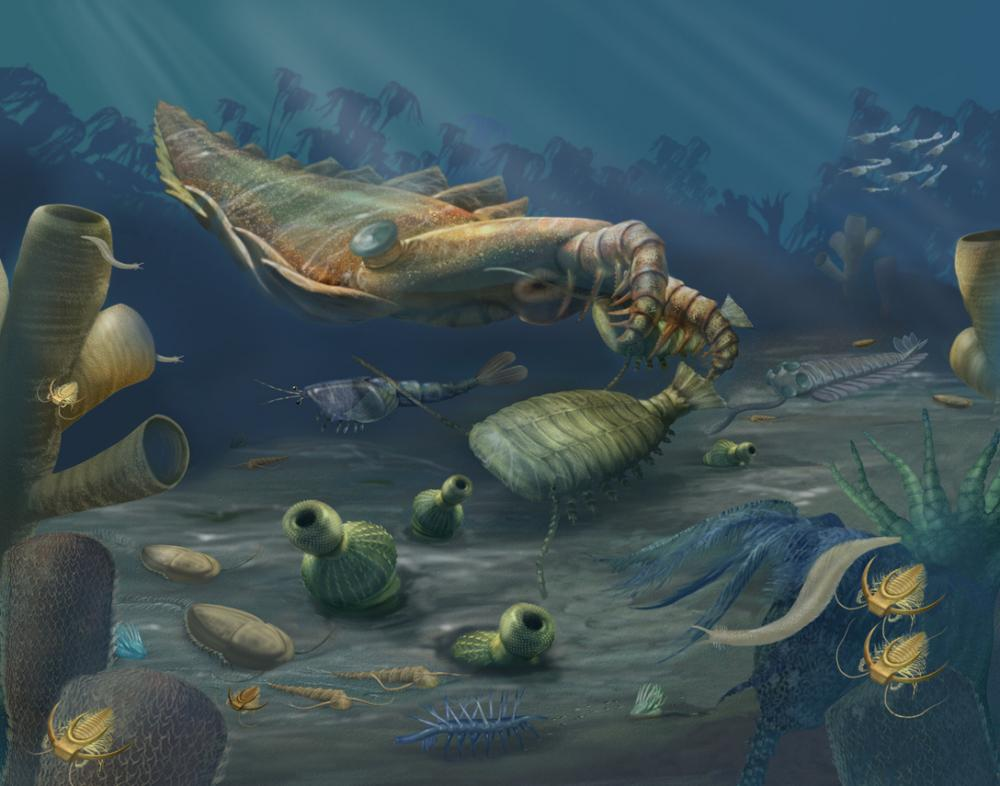
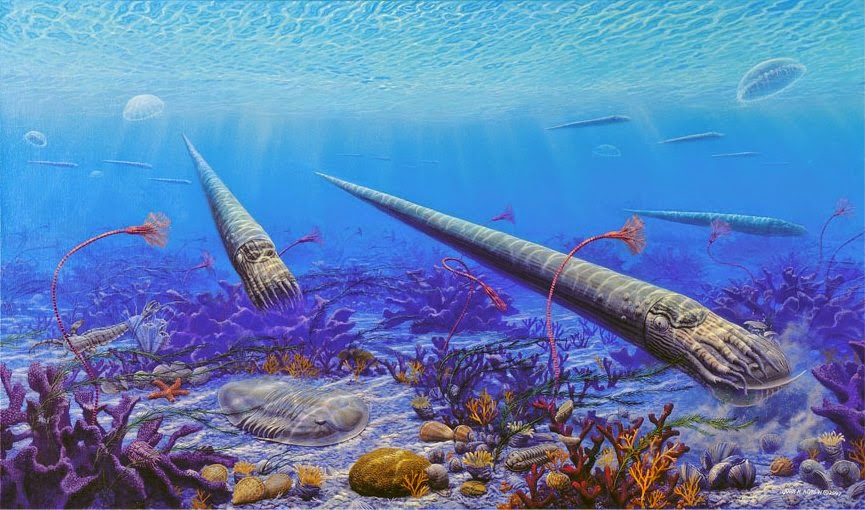
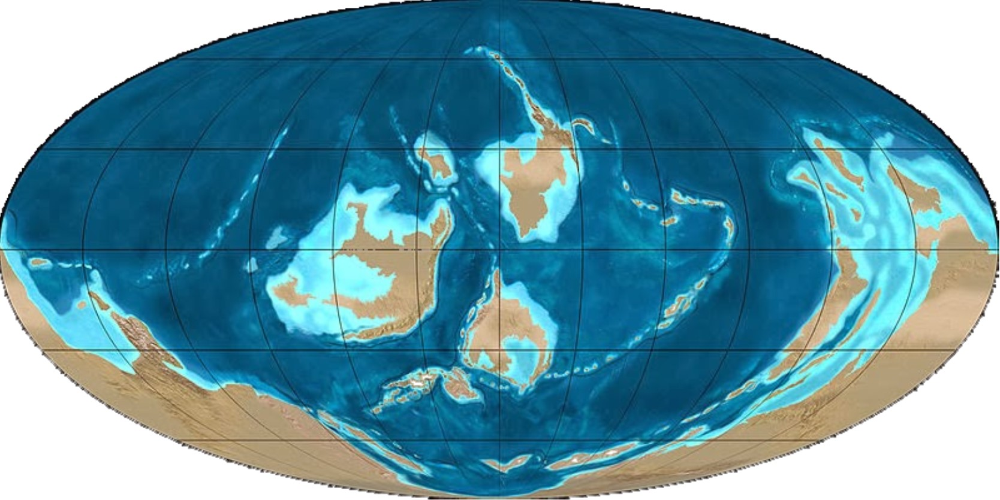

L'évolution de l'oryctérope du Cap, un mammifère fourmilier d'Afrique. Credit : Pearson Scott Foresman, Smokeybjb, T. Michael Keesey, Nobu Tamura, and Ernst Haeckel.
Je rappelle que
la biodiversité n'est jamais figée, elle évolue naturellement au cours des millénaires. Des espèces disparaissent, d'autres apparaissent...
La vie reste en mouvement, en équilibre dynamique.
Quand une extinction devient-elle massive ?
Les espèces disparaissent parfois nettement plus vite qu'elles n'apparaissent. La biodiversité est alors menacée ; elle risque de connaître
une extinction massive.
La Terre perd dans ce cas la majorité de ses espèces animales et végétales sur une très courte durée à l'échelle des temps géologiques, c'est à dire en quelques milliers à millions d'années.
Ce phénomène est très rare, on dit qu'il s'est produit cinq fois au cours des 600 derniers millions d'années.
A chaque extinction, la vie passe comme au travers d'un grand entonnoir :
Si les bactéries s'en sortent plutôt bien, la majorité des espèces animales et végétales ne survivent pas et seules quelques unes passent dans l'entonnoir.
Chaque crise est l'occasion de reprendre sur de nouvelles bases. La Terre est dépeuplée : il y a de la place pour tout le monde ! La vie s'épanouit donc à partir des quelques rescapés qui se diversifient et forment de nouvelles espèces.
Chaque crise marque ainsi la fin puis le début d'une période géologique.
La frise des temps géologiques
Avant de présenter les cinq grandes extinctions massives, voici un petit rappel des grandes ères géologiques.

Le découpage du temps en ères et périodes géologiques.

Un océan pendant le Cambrien, il y a 542 à 488 million d'années. Credit : Smithsonian Institution.
Notre planète se forme il y a 4,6 milliards d'années. Si la vie apparaît sur Terre il y a 3,5 milliards d’années,
son histoire ne s’accélère brutalement qu'il y a 540 millions d’années. Les espèces se diversifient et nous laissent de plus en plus de fossiles qui permettent de retracer l'histoire de la biodiversité. Les scientifiques la divisent en chapitres, qui font référence à de grandes époques marquées par une faune, une flore et un climat particuliers...
L'
ère primaire commence ainsi il y a 540 millions d'années : on l'appelle aussi Paléozoïque. Puis vient l'
ère secondaire, ou le Mésozoïque. Et enfin l'
ère tertiaire, le Cénozoïque. On parle aussi de l'ère quaternaire, qui nous est toute récente.
Chaque ère est divisée en plusieurs périodes géologiques.
L'ère primaire commence avec le Cambrien - tout ce qui est antérieur à 540 millions d'années appartient donc au "pré-Cambrien".
Le Cambrien est suivi par
l'Ordovicien, de -488 à -444 millions d'années.
La crise Ordovicienne
Durant l'Ordovicien (de -488 à -444 millions d'années), les plaques tectoniques se rassemblent au pôle sud en
un supercontinent : le Gondwana.
Il est couvert de glaces qui réfléchissent les rayons du soleil si bien que
le climat terrestre se refroidit.
En parallèle, de grandes algues marines et quelques plantes terrestres consomment du CO2 pour la photosynthèse.
Le taux de CO2 décroit dans l'atmosphère et
l'effet de serre' diminue, ce qui refroidit encore notre planète.
Et puisque l'oxygène se dissout mieux dans les eaux froides, l'immense océan qui entourait le Gondwana s'est vite enrichi en oxygène.
Résultat :
la vie marine se multiplie et se diversifie à l'Ordovicien.

La vie marine pendant l'Ordovicien en Amérique du Nord.
Credit : A Sea without Fish © Indiana University Press.
L'océan grouille à l'époque de bestioles en tous genres :
de nombreux arthropodes à pâtes articulées et carapace, des coraux, des palourdes, des escargots et des étoiles de mer, ou encore des éponges et des espèces de mousse.
Des créatures plus exotiques peuplent aussi les mers de l'Ordivicien, notamment des céphalopodes tels que le fameux orthocère :
un immense mollusque de six mètres de long dont la tête est munie de tentacules... C'est un redoutable prédateur !
Les êtres vivants redoublent de créativité pour manger ou ne pas se laisser manger ; ils adoptent de nouvelles formes, de nouvelles stratégies de survie.
La biodiversité se diversifie vite et atteint son apogée.

Carte des continents avec le Gondwana au pôle sud à l'Ordovicien.
Credit : © Ron Blakey, NAU Geology
Mais le refroidissement climatique se poursuit tant qu'il aboutit sur Terre à
une grande glaciation.
L'eau est piégée dans les calottes polaires et
le niveau de la mer baisse...
Il y a trop peu d'eau pour assurer une circulation océanique efficace.
Certains bassins se retrouvent isolés : ils ne sont plus renouvelés par les courants marins et s'apauvrissent en oxygène.
Les créatures marines peinent à respirer, elles voient leur habitat se restreindre et entrent en compétition avec leurs voisines...
De nombreuses espèces sont en voie d'extinction.
Et là, surprise ! Le taux de CO2 augmente à nouveau dans l'atmosphère. Peut être à cause d'éruptions volcaniques qui recrachent du CO2, ou parce que la terre ferme est cachée sous les calottes polaires, ce qui empêche le CO2 d'éroder les roches silicatés si bien qu'il s'accumule dans l'atmosphère. Quoi qu'il en soit, la conséquence est la même : le CO2 piège la chaleur réémise par la Terre vers l'espace et crée un puissant
effet de serre. La température augmente, les glaces fondent et le niveau de la mer monte vite. C'est le coup de grâce pour la biodiversité qui n'a pas le temps de s'adapter à ce
changement climatique.
Elle s'effondre et perd 80% de ses espèces. La vie connaît sa
première grande crise biologique, la crise Ordovicienne.
C'est vrai, un changement climatique a déjà entraîné une extinction massive par le passé.
Si les orthocères de l'Ordovicien n'ont pas survécu à cette crise, survivrons-nous au réchauffement climatique actuel ?
La question reste ouverte.
Voyons plutôt comment la vie a repris après l'Ordovicien et quels dangers l'attendent.